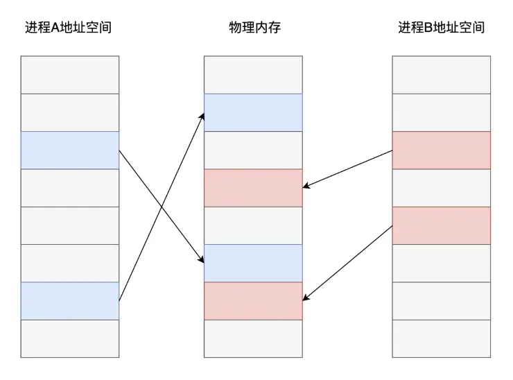
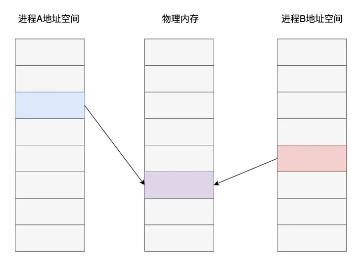
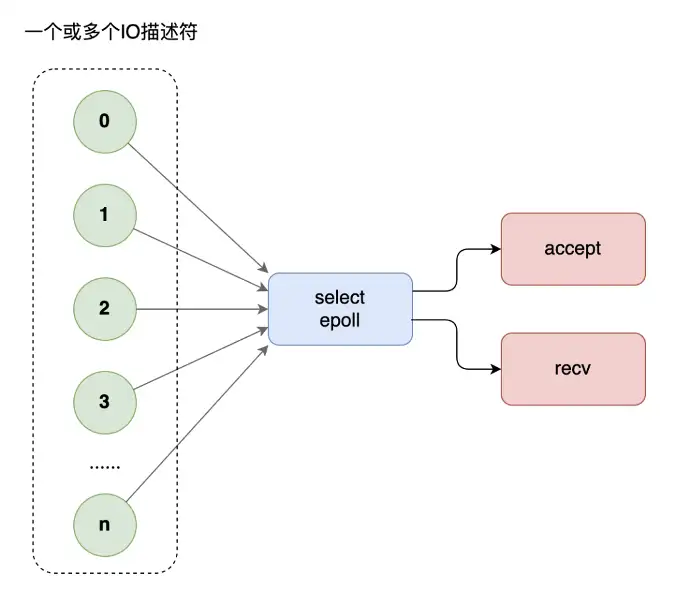
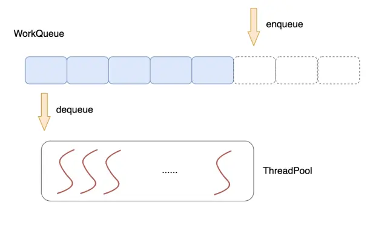

1、高性能程式設計關注點
1. 系統層面
- 簡化控制流程和資料流程
- 減少消息傳遞次數
- 負載平衡，比如避免個別伺服器成為性能瓶頸
- 充分利用硬體性能，比如打滿 CPU
- 減少系統額外開銷，比如上下文切換等
- 批處理與資料預取、記憶體屏障、綁核、偽共享、核隔離等
2. 演算法層面
- 高效演算法降低時間和空間複雜度
- 高效的資料結構設計，比如
C++ 資料結構設計：如何高效地儲存並操作超大規模的 76 贊同 · 7 評論文章
- 增加任務的並行性（如協程）、減少鎖的開銷（lock_free）
3. 程式碼層面
- I-cache（指令），D-cache（資料） 最佳化
- 程式碼執行順序的調整，比如減少分支預測失敗率
- 編譯最佳化選項，比如 PGO、LTO、BOLT等
- 語言本身相關的最佳化技巧
- 減少函數呼叫棧的深度
- 操作放置到編譯期執行，比如範本
- 延遲計算：（1）兩端建構（當實例能夠被靜態地建構時，經常會缺少建構對象所需的資訊。在建構對象時，我們並 不是一氣呵成，而是僅在建構函式中編寫建立空對象的最低限度的程式碼。稍後，程序再 呼叫該對象的初始化成員函數來完成建構。將初始化推遲至有足夠的額外資料時，意味 著被建構的對象總是高效的、扁平的資料結構；（2）寫時複製（指當一個對象被覆制時，並不複製它的動態成員變數，而是讓兩個實例共享動態變數。只在其中某個實例要修改該變數時，才會真正進行複製）
2、預置知識 - Cache
1. Cache hierarchy
Cache（快取）一般分為 3 級：L1、L2、L3. 通常來說 L1、L2是整合在 CPU 裡面的（可以稱之為On-chip cache），而 L3 是放在 CPU 外面（可以稱之為 Off-chip cache）。當然這個不是絕對的，不同 CPU 的做法可能會不太一樣。當然，Register（暫存器）裡的資料讀寫是最快的。比如，矩陣乘法最佳化：
寨森Lambda-CDM：C++加速矩陣乘法的最簡單方法515 贊同 · 40 評論文章
2. Cache size
Cache 的容量決定了有多少程式碼和資料可以放到 Cache 裡面，如果一個程序的熱點（hotspot）已經完全填充了整個 Cache，那 麼再從 Cache 角度考慮最佳化就是白費力氣了。
3. Cache line size
CPU 從記憶體 Load 資料是一次一個 cache line；往記憶體裡面寫也是一次一個 cache line，所以一個 cache line 裡面的資料最好是讀寫分開，否則就會相互影響。
4. Cache associative
全關聯(full associative)：記憶體可以對應到任意一個 Cache line；
N-way 關聯：這個就是一個雜湊表的結構，N 就是衝突鏈的長度，超過了 N，就需要替換。
5. Cache type
I-cache（指令）、D-cache（資料）、TLB（MMU 的 cache），參考：
https://en.wikipedia.org/wiki/CPU_cacheen.wikipedia.org/wiki/CPU_cache
3、系統最佳化方法
1. Asynchronous
非同步，yyds！
2. Polling
Polling 是網路裝置裡面常用的一個技術，比如 Linux 的 NAPI 或者 epoll。與之對應的是中斷，或者是事件。Polling 避免了狀態切換的開銷，所以有更高的性能。但是，如果系統裡面有多種任務，如何在 Polling 的時候，保證其他任務的執行時間？Polling 通常意味著獨佔，此時系統無法響應其他事件，可能會造成嚴重後果。凡是能用事件或中斷的地方都能用 Polling 替代，是否合理，需要結合系統的資料流程來決定。
3. 靜態記憶體池
靜態記憶體有更好的性能，但是適應性較差（特別是系統裡面有多個 任務的時候），而且會有浪費（提前分配，還沒用到就分配了）。
4. 並行最佳化：lock-free 和 lock-less。
lock-free 是完全無鎖的設計，有兩種實現方式：
• Per-cpu data， 上文已經提及過，就是 thread local
• CAS based，CAS 是 compare and swap，這是一個原子操作（spinlock 的實現同樣需要 compare and swap，但區別是 spinlock 只有兩個狀態 LOCKED 和 UNLOCKED，而 CAS 的變數可以有多個狀態）；其次，CAS 的實現必須由硬體來保障(原子操作)，CAS 一次可以操作 32 bits，也有 MCAS，一次可以修改一塊記憶體。基於 CAS 實現的資料結構沒有一個統一、一致的實現方法，所以有時不如直接加鎖的演算法那麼簡單，直接，針對不同的資料結構，有不同的 CAS 實現方法，讀者可以自己搜尋。
lock-less 的目的是減少鎖的爭用（contention），而不是減少鎖。這個和鎖的粒度（granularity）相關，鎖的粒度越小，等待的時間就越短，並行的時間就越長。
鎖的爭用，需要考慮不同執行緒在獲取鎖後，會執行哪些不同的動作。比如多執行緒佇列，一般情況下，我們一把鎖鎖住整個佇列，性能很差。如果所有的 enqueue 操作都是往佇列的尾部插入新節點，而所有的 dequeue 操作都是從佇列的頭部刪除節點，那麼 enqueue 和 dequeue 大部分時候都是相互獨立的，我們大部分時候根本不需要鎖住整個佇列，白白損失性能！那麼一個很自然就能想到的演算法最佳化方案就呼之慾出了：我們可以把那個佇列鎖拆成兩個：一個佇列頭部鎖（head lock)和一個佇列尾部鎖(tail lock)，偽程式碼如下：
typedef struct node_t {
TYPE value;
node_t *next
} NODE;
typedef struct queue_t {
NODE *head;
NODE *tail;
LOCK q_h_lock;
LOCK q_t_lock;
} Q;
initialize(Q *q) {
node = new_node() // Allocate a free node
node->next = NULL // Make it the only node in the linked list
q->head = q->tail = node // Both head and tail point to it
q->q_h_lock = q->q_t_lock = FREE // Locks are initially free
}
enqueue(Q *q, TYPE value) {
node = new_node() // Allocate a new node from the free list
node->value = value // Copy enqueued value into node
node->next = NULL // Set next pointer of node to NULL
lock(&q->q_t_lock) // Acquire t_lock in order to access Tail
q->tail->next = node // Link node at the end of the queue
q->tail = node // Swing Tail to node
unlock(&q->q_t_lock) // Release t_lock
｝
dequeue(Q *q, TYPE *pvalue) {
lock(&q->q_h_lock) // Acquire h_lock in order to access Head
node = q->head // Read Head
new_head = node->next // Read next pointer
if new_head == NULL // Is queue empty?
unlock(&q->q_h_lock) // Release h_lock before return
return FALSE // Queue was empty
endif
*pvalue = new_head->value // Queue not empty, read value
q->head = new_head // Swing Head to next node
unlock(&q->q_h_lock) // Release h_lock
free(node) // Free node
return TRUE // Queue was not empty, dequeue succeeded
}
具體實現可參考：高性能多執行緒佇列、
5. 處理程序間通訊 - 共用記憶體
關於各種處理程序間通訊的方式詳細介紹和比較，下面這篇文章講得非常詳細：
對於本地處理程序間需要高頻次的大量資料互動，首推共用記憶體這種方案。
現代作業系統普遍採用了基於虛擬記憶體的管理方案，在這種記憶體管理方式之下，各個處理程序之間進行了強制隔離。程式碼中使用的記憶體地址均是一個虛擬地址，由作業系統的記憶體管理演算法提前分配對應到對應的實體記憶體頁面，CPU在執行程式碼指令時，對訪問到的記憶體地址再進行即時的轉換翻譯。

從上圖可以看出，不同處理程序之中，雖然是同一個記憶體地址，最終在作業系統和 CPU 的配合下，實際儲存資料的記憶體頁面卻是不同的。而共用記憶體這種處理程序間通訊方案的核心在於：如果讓同一個實體記憶體頁面對應到兩個處理程序地址空間中，雙方不是就可以直接讀寫，而無需複製了嗎？

當然，共用記憶體只是最終的資料傳輸載體，雙方要實現通訊還得藉助訊號、訊號量等其他通知機制。
6. I/O 最佳化 - 多路復用技術
網路程式設計中，當每個執行緒都要阻塞在 recv 等待對方的請求，如果訪問的人多了，執行緒開的就多了，大量執行緒都在阻塞，系統運轉速度也隨之下降。這個時候，你需要多路復用技術，使用 select 模型，將所有等待（accept、recv）都放在主執行緒裡，工作執行緒不需要再等待。

但是，select 不能應付海量的網站存取。這個時候，你需要升級多路復用模型為 epoll。select 有三弊，epoll 有三優：
- select 底層採用陣列來管理套接字描述符，同時管理的數量有上限，一般不超過幾千個，epoll使用樹和鏈表來管理，同時管理數量可以很大
- select不會告訴你到底哪個套接字來了消息，你需要一個個去詢問。epoll 直接告訴你誰來了消息，不用輪詢
- select進行系統呼叫時還需要把套接字列表在使用者空間和核心空間來回複製，循環中呼叫 select 時簡直浪費。epoll 統一在核心管理套接字描述符，無需來回複製
7. 執行緒池技術
使用一個公共的任務佇列，請求來臨時，向佇列中投遞任務，各個工作執行緒統一從佇列中不斷取出任務來處理，這就是執行緒池技術。

多執行緒技術的使用一定程度提升了伺服器的並行能力，但同時，多個執行緒之間為了資料同步，常常需要使用互斥體、訊號、條件變數等手段來同步多個執行緒。這些重量級的同步手段往往會導致執行緒在使用者態/核心態多次切換，系統呼叫，執行緒切換都是不小的開銷。具體實現，請參考這篇文章：
C++ 多線程（四）：實現一個功能完整的線程池12 贊同 · 4 評論文章
4、演算法最佳化
比如高效的過濾演算法、雜湊演算法、分治演算法等等，大家在刷題的過程中估計都能感受到演算法的魅力了，這裡不再贅述。
5、程式碼層次最佳化
1. I-cache 最佳化
一是相關的原始檔要放在一起；二是相關的函數在object檔案裡面，也應該是相鄰的。這樣，在可執行檔案被載入到記憶體裡面的時候，函數的位置也是相鄰的。相鄰的函數，衝突的機率比較小。而且相關的函數放在一起，也符合模組化程式設計的要求：那就是 高內聚，低耦合。
如果能夠把一個 code path 上的函數編譯到一起（需要編譯器支援，把相關函數編譯到一起）， 很顯然會提高 I-cache 的命中率，減少衝突。但是一個系統有很多個 code path，所以不可能面面俱到。不同的性能指標，在最佳化的時候可能是衝突的。所以儘量做對所以 case 都有效的最佳化，雖然做到這一點比較難。
常見的手段有函數重排（獲取程式執行軌跡，重排二進制目標檔案（elf 檔案）裡的程式碼段）、函數冷熱分區等。
https://github.com/facebookincubator/BOLTgithub.com/facebookincubator/BOLT
2. D-cache相關最佳化
- Cache line alignment （cache 對齊）
資料跨越兩個 cacheline，就意味著兩次 load 或者兩次 store。如果資料結構是 cacheline 對齊的，就有可能減少一次讀寫。資料結構的首地址 cache line 對齊，意味著可能有記憶體浪費（特別是陣列這樣連續分配的資料結構），所以需要在空間和時間兩方面權衡。
- 分支預測
likely/unlikely
- Data prefetch (資料預取）
使用 X86 架構下 gcc 內建的預取指令集：
#include <time.h>
#include <stdio.h>
#include <stdlib.h>
int binarySearch(int *array, int number_of_elements, int key) {
int low = 0, high = number_of_elements-1, mid;
while(low <= high) {
mid = (low + high)/2;
#ifdef DO_PREFETCH
// low path
__builtin_prefetch (&array[(mid + 1 + high)/2], 0, 1);
// high path
__builtin_prefetch (&array[(low + mid - 1)/2], 0, 1);
#endif
if(array[mid] < key)
low = mid + 1;
else if(array[mid] == key)
return mid;
else if(array[mid] > key)
high = mid-1;
}
return -1;
}
- Register parameters （暫存器參數）
一般來說，函數呼叫的參數少於某個數，比如 3，參數是通過暫存器傳遞的（這個要看 ABI 的約定）。所以，寫函數的時候，不要帶那麼多參數。
- Lazy computation （延遲計算）
延遲計算的意思是最近用不上的變數，就不要去初始化。通常來說，在函數開始就會初始化很多資料，但是這些資料在函數執行過程中並沒有用到（比如一個分支判斷，就退出了函數），那麼這些動作就是浪費了。
變數初始化是一個好的程式設計習慣，但是在性能最佳化的時候，有可能就是一個多餘的動作，需要綜合考慮函數的各個分支，做出決定。
延遲計算也可以是系統層次的最佳化，比如 COW(copy-on-write) 就是在 fork 子處理程序的時候，並沒有複製父處理程序所有的頁表，而是隻複製指令部分。當有寫發生的時候，再複製資料部分，這樣可以避免不必要的複製，提供處理程序建立的速度。
- Early computation （提前計算）
有些變數，需要計算一次，多次使用的時候。最好是提前計算一下，保存結果，以後再引用，避免每次都重新計算一次。
- Allocation on stack （局部變數）
適當定義一些全域變數避免棧上的變數
- Per-cpu data structure (非共享的資料結構）
比如並行程式設計時，給每個執行緒分配獨立的記憶體空間
- Move exception path out （把 exception 處理放到另一個函數裡面）
只要引入了異常機制，無論系統是否會拋出異常，異常程式碼都會影響程式碼的大小與性能；未觸發異常時對系統影響並不明顯，主要影響一些編譯最佳化手段；觸發異常之後按異常實現機制的不同，其對系統性能的影響也不相同，不過一般很明顯。所以，不用擔心異常對正常程式碼邏輯性能的影響，同時不要借用異常機制處理業務邏輯。現代 C++ 編譯器所使用的異常機制對正常程式碼性能的影響並不明顯，只有出現異常的時候異常機制才會影響整個系統的性能，這裡有一些測試資料。
另外，把 exception path 和 critical path 放到一起（程式碼混合在一起），就會影響 critical path 的 cache 性能。而很多時候，exception path 都是長篇大論，有點喧賓奪主的感覺。如果能把 critical path 和 exception path 完全分離開，這樣對 i-cache 有很大幫助
- Read, write split （讀寫分離）
偽共享(false sharing)：就是說兩個無關的變數，一個讀，一個寫，而這兩個變數在一個cache line裡面。那麼寫會導致cache line失效（通常是在多核程式設計裡面，兩個變數在不同的core上引用）。讀寫分離是一個很難運用的技巧，特別是在code很複雜的情況下。需要不斷地偵錯，是個力氣活（如果有工具幫助會好一點，比如 cache miss時觸發 cpu 的 execption 處理之類的）
以C++為核心語言的高頻交易系統是如何做到低延遲的？982 贊同 · 31 評論回答
6、總結
上面所列舉的大多數還是通用的高性能程式設計手段，從物理硬體 CPU、記憶體、硬碟、網路卡到軟體層面的通訊、快取、演算法、架構每一個環節的最佳化都是通往高性能的道路。軟體性能瓶頸定位的常用手段有 perf（火焰圖）以及在 Intel CPU 上使用 pmu-tools 進行 TopDown 分析。接下來，我們將從 C++ 程式語言本身層面出發，探討下不同場景下最高效的 C++ 程式碼實現方式。
減少上下文切換（context switch）
在作業系統中，減少上下文切換（context switch）的方法有幾種：
-
批處理任務：將相關任務批次處理，減少任務之間的頻繁切換。這意味著，一旦一個任務開始執行，它會執行一段時間，而不是在短時間內多次切換到其他任務。
-
多執行緒和協程：使用執行緒池或協程來避免建立過多的執行緒或處理程序。執行緒和處理程序的切換開銷很高，但協程可以在同一個執行緒內進行切換，開銷更小。
-
I/O 多路復用：使用像 epoll（在 Linux 上）或 kqueue（在 BSD 上）這樣的機制，允許一個處理程序監視多個檔案描述符上的事件，從而減少了不必要的上下文切換。
-
減少中斷處理：在核心中儘可能減少中斷處理的時間，以減少被打斷的頻率。這可以通過最佳化中斷處理程序的程式碼來實現。
-
最佳化調度演算法：調度演算法的最佳化可以減少不必要的上下文切換。例如，使用搶佔式調度演算法來確保高優先順序任務盡快執行。
-
共用記憶體：通過共用記憶體而不是複製資料來減少處理程序之間的通訊開銷。這可以減少由於處理程序通訊而導致的上下文切換。
-
避免競爭條件：競爭條件可能導致頻繁的上下文切換，因此設計時應儘量避免這種情況的發生。
總的來說，減少上下文切換的關鍵在於合理設計程序結構和演算法，以及最佳化作業系統的調度和資源管理策略。